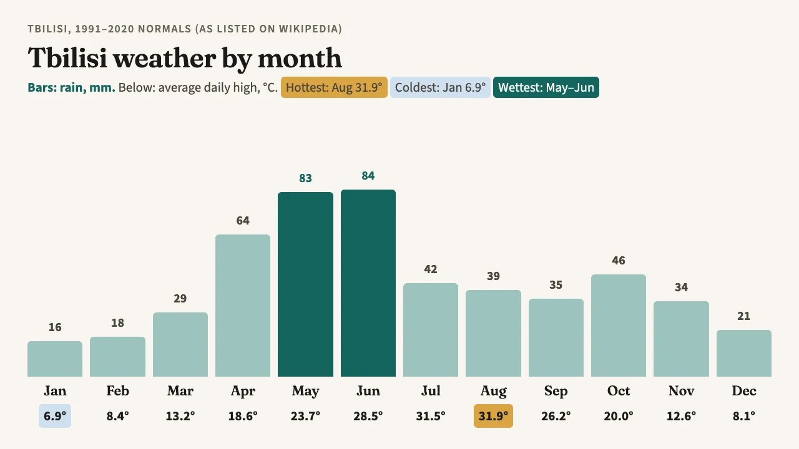
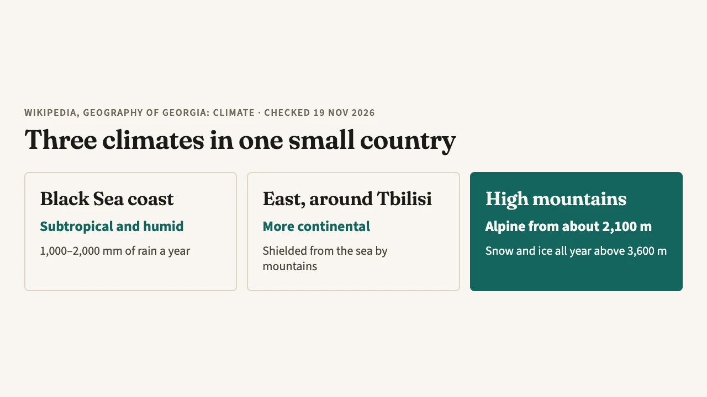

- Tbilisi, hottest
- August, 31.9 °C average high
- Tbilisi, coldest
- January, 6.9 °C
- Snowy days in Tbilisi
- about 22 a year
- Coast rain
- 1,000–2,000 mm a year
- Emergency
- 112
This page is about Georgia the country, not the US state, and is part of our travel guide. Checked on 19 November 2026.
When is the best time to visit Georgia?
Late spring and early autumn, in our reading of the figures. In the capital, May and June have average highs of 23.7 and 28.5 °C. September and October have 26.2 and 20.0 °C. That is warm, but below the July and August peak.

Our reading, not a forecast. The figures are long-term averages, and the choices below are ours.
- The capital and the eastern plains: May–June and September–October. May and June are also the wettest months in the capital, so pack a rain jacket. September and October are drier.
- The mountains: summer. Our Tusheti guide gives its season as June to October. In Svaneti and Kazbegi, plan for snow on high roads in the cold months.
- The Black Sea coast: humid all year, and wettest in autumn. In Batumi, September, October and November each bring more than 300 mm of rain. Our Batumi guide has its weather by month.
Our tip. June and September fall inside the Tusheti season and outside the hottest months in the capital. They suit a trip that mixes the city and the mountains.
Tbilisi weather by month
Expect cool, mostly dry winters, a wet late spring and hot summers. The figures below are 1991–2020 averages, as summarised on Wikipedia, a secondary source. The table there cites Pogoda.ru.net, NOAA and Weather Atlas. UV figures are as listed on Wikipedia, which credits Nomadseason.
| Month | Average high, °C | Rain, mm | Snowy days | UV index |
|---|---|---|---|---|
| Jan | 6.9 | 16.4 | 6 | 1 |
| Feb | 8.4 | 18.2 | 8 | 2 |
| Mar | 13.2 | 29.1 | 3 | 4 |
| Apr | 18.6 | 63.8 | 0.1 | 5 |
| May | 23.7 | 82.9 | 0 | 7 |
| Jun | 28.5 | 84.0 | 0 | 8 |
| Jul | 31.5 | 41.6 | 0 | 7 |
| Aug | 31.9 | 39.4 | 0 | 7 |
| Sep | 26.2 | 34.8 | 0 | 6 |
| Oct | 20.0 | 46.3 | 0.1 | 4 |
| Nov | 12.6 | 34.2 | 1 | 3 |
| Dec | 8.1 | 20.8 | 4 | 1 |

Hottest. August has the highest average high, 31.9 °C, just above July at 31.5 °C. Nights stay warm too, with average lows of 20.4 °C in July and 20.3 °C in August. The July record listed in the same table is 42.0 °C.
Coldest. January averages 6.9 °C by day and −0.6 °C at night. Night lows in February (0.2 °C) and December (1.2 °C) are also close to freezing.
Wettest and driest. June (84.0 mm) and May (82.9 mm) get the most rain. January is the driest month, with 16.4 mm.
Snow. There are about 22 snowy days a year, most in February (8) and January (6). From May to September the average is zero.
Our reading. For long city walks, May–June and September–October work best for us; April is milder still, at 18.6 °C.
Three climates in one small country
Distance from the sea and height shape the weather. The climate section of Wikipedia's geography article describes three broad types.
The Black Sea coast. Wikipedia says that here "the dominant subtropical climate features high humidity and heavy precipitation", with 1,000 to 2,000 mm a year. Batumi is wetter still, at about 2,519 mm a year in airport records. The warmest month there is August, with a daily mean of about 23 °C.
The east. The plains of the east "are shielded from the influence of the Black Sea by mountains that provide a more continental climate", according to Wikipedia. It is much drier: no month in the capital gets more than 85 mm of rain, while Batumi (1981–2010 airport normals) gets over 300 mm in each autumn month.
The mountains. "Alpine conditions begin at about 2,100 m", Wikipedia says, "and above 3,600 m snow and ice are present year-round". Our tip: pack warm layers and rain gear, even for a summer trip.

Georgia in summer: heat, UV and storms
Expect heat in the lowlands and the main season in the mountains. In the capital, July and August average 31.5 and 31.9 °C by day. The UV index listed on Wikipedia is 7 or 8 from May to August.
Heat exhaustion. The NHS lists signs such as "tiredness, dizziness, headache", "excessive sweating", cramps and "being very thirsty". Move the person to a cool place, give them water and cool their skin. They "should start to cool down and feel better within 30 minutes".
Heatstroke: dial 112. The NHS tells UK readers to call 999 for signs of heatstroke, including "still being unwell after 30 minutes of resting in a cool place…", "a very high temperature", "hot skin that's not sweating", confusion, "a seizure or fit" and "loss of consciousness". Here, dial 112 and ask for an ambulance, as GOV.UK advises. While you wait, the NHS says to wrap the person in "a cool, wet sheet", fan them or sponge them down with cold water.
Storms and fires. GOV.UK warns: "Lightning and wildfires are a risk in summer, particularly in the mountains." Our tip: check the local forecast before a long walk, and turn back if a storm builds.
Georgia in winter: Tbilisi, mountain roads and skiing
The capital is cool by day and near freezing at night. The mountains bring snow, closed roads and avalanche risk.
Tbilisi in winter
Expect cool days and nights around freezing. January averages 6.9 °C by day and −0.6 °C at night; December averages 8.1 and 1.2 °C. Snow falls on about 22 days a year, most often in January and February. Our tip: bring a warm coat and shoes with grip for snowy days.

Mountain roads
Snow and landslides can block high roads. GOV.UK safety advice warns that "heavy rain, flooding and snow at higher altitudes can affect roads and bridges making travel difficult or impossible (particularly in remote areas)". It adds that "landslides are common".
Your car. Outside the capital, GOV.UK advises: "make sure your vehicle is suitable for off-road driving and check weather conditions locally." Before a mountain trip, read our driving guide and the Kazbegi guide.
Skiing
Our tip: stay on marked runs. GOV.UK says: "Off-piste skiing is very dangerous." It also notes: "It can be difficult to get accurate information on mountain conditions, including avalanche risks." If you get into trouble while skiing, "the emergency response may be limited".
Altitude. For height and how it affects you at the ski resort, see our Gudauri guide.
Your policy. GOV.UK warns: "Many insurance policies will not cover damage to rental equipment or skiing off-piste without a guide." Check yours before you go.
Cold: hypothermia and frostbite
If you think someone has hypothermia, dial 112 first, then get them somewhere sheltered and warm them slowly. The NHS pages below say 999, the UK number; here, use 112.
Hypothermia. The NHS lists "shivering", "pale, cold and dry skin", "slurred speech", "slow breathing" and "tiredness or confusion". Move the person "indoors or somewhere sheltered as quickly as possible". Remove wet clothing, wrap them in a blanket and "give them a warm non-alcoholic drink" only "if they're fully awake". Do not use a hot bath or a hot water bottle, do not rub their arms or legs, and do not give alcohol.
Frostbite. At first the skin may be "cold and firm" and "numb", or you may feel "a stinging or burning sensation", says the NHS. Get medical help. Dial 112 for "hard, frozen skin", "swelling and loss of feeling in the affected area" or blisters. While you wait, warm the area in "warm (not hot) water" and "do not rub the affected area".
Layers. The NHS advises several loose layers with a waterproof outer layer. Our tip: keep gloves, a hat and dry socks in your bag.

Spring and autumn: Georgia in May and October
Both are warm, but spring is wetter. In our reading, autumn is the steadier choice for the capital.
May. The average high in the capital is 23.7 °C, and the UV index listed on Wikipedia is already 7. But May (82.9 mm) and June (84.0 mm) are the wettest months there. Our tip: pack a light rain jacket and sunscreen.
September and October. September averages 26.2 °C by day, October 20.0 °C. Both are drier than late spring, with 34.8 and 46.3 mm of rain.
The coast is different. Batumi gets more than 300 mm of rain in each autumn month. For a beach trip, read the Batumi guide first.
Our reading. For city days, October gives mild weather with a little over half the rain of May. For the mountains, September and October still fall inside the Tusheti season.
Medical help in any season
In an emergency, dial 112. The UK government's health advice says: "Dial 112 and ask for an ambulance." Our 112 guide explains how to call and what to say.
Finding a doctor. For a problem that is not an emergency, the catalogue of doctors and clinics in Tbilisi on 100doc.ge is one place to look.
Your cover. Most visitors need health and accident cover of at least 30,000 GEL for their whole stay; see the entry rule on travel insurance.
Our tip. Save 112 and your host's number in your phone, and carry a list of your medicines in English.
Frequently asked questions
When is the best time to visit Georgia?
In our reading of the capital's climate table, May–June and September–October. For the mountains, choose summer. The coast is humid and wet all year.
Is Tbilisi cold in December?
Cool, not freezing, by day. December averages 8.1 °C by day and 1.2 °C at night, with about 4 snowy days.
What is the hottest month in Tbilisi?
When does it snow in Tbilisi?
Mostly in January and February, with 6 and 8 snowy days on average. The year has about 22.
Which month has the most rain?
In the capital, June (84.0 mm), just ahead of May (82.9 mm). On the coast, autumn is far wetter: Batumi gets more than 300 mm in each of September, October and November.
Are mountain roads open in winter?
What number do I call in an emergency?
Dial 112 and ask for an ambulance.
Sources
- Wikipedia: Tbilisi, climate table, 1991–2020 normals (secondary source) ↑
- Wikipedia: Climate of Georgia (country) — opens the Climate section of the geography article (secondary source) ↑
- Wikipedia: Batumi, NOAA airport normals (secondary source) ↑
- GOV.UK travel advice: safety and security ↑
- GOV.UK travel advice: health ↑
- NHS: hypothermia ↑
- NHS: frostbite ↑
- NHS: heat exhaustion and heatstroke ↑
This guide is general information, not medical advice: the doctor decides on your care.